诗歌
在Dreamweaver中插入有颜色的直线(水平线)
发布时间：2010-06-20 18:28:39 作者：佚名 我要评论
在dreamweaver中，如果插入 Horizontal Rule (水平线)，默认情况下这根线只是灰色，在很多情况下，这并不符合我们的要求。如果想要插入其他颜色的直线(甚至细到一个像素)，该怎么办呢?
在dreamweaver中，如果插入 Horizontal Rule (水平线)，默认情况下这根线只是灰色，在很多情况下，这并不符合我们的要求。如果想要插入其他颜色的直线(甚至细到一个像素)，该怎么办呢?
首先,在document window(网页编辑窗口)中的适当位置，插入Horizontal Rule，
按ctrl + F3 调出 Property inspector(属性面板)，
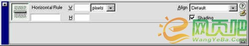
在这个属性面板中，把shading(阴影)前的勾去掉。在W中输入像素值(pixels)或者百分比，可以设置这条线的长度。在H中，输入1，都可以使这根线变得很细，细到一个像素。如果想要的是粗线，可以在H中，输入更大的值。这样细线就插好了，但你会发现，这根线是灰色的，在属性面板中，并不可以设置颜色。如果想要设置其他颜色，可以通过css来控制。在DreamWeaver中可以非常容易地设置css，你甚至完全不需要了解css的语法。
选择Text菜单下的CSS style | New Style ，
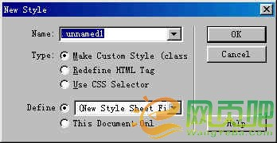
在“New Style (新样式)”对话框中，在name(名称)栏中输入一个名称，如"colorline"，并在Define(定义)单选框中选择“This document only(只用于此页)”，然后点ok。随后会弹出的Style definition for .colorline对话框:
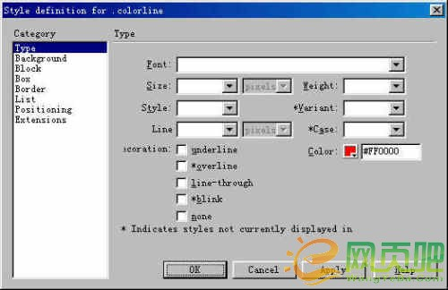
在type项目中，选择想要的颜色，比如说红色，然后点ok，再点done，于是一个新的样式就建好了。选定网页编辑窗口中的细线，点 Text | CSS style | colorline(colorline就是刚才建立的那个新样式)，在网页编辑窗口中，线的颜色依然还是灰色，但按F12预览，在浏览器中就可以看到所插入细线的颜色已经变成了你想要的红色。
还有一种办法可以插入有颜色的细线,甚至细到一个像素.首先在网页编辑窗口中插入一个一行一列的表格,然后在这个表格中插入一个1pixel × 1Pixel的透明图像(在dreameaver4中控制页面布局所使用的spacer image正是这样的图像，所以如果你不会用软件制作这样的图像，可在dreameaver4中如此生成：
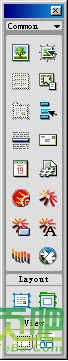
Object面板 首先点选Objiect面板的View 中的layout view(布局视图)，再点draw layout table，在网页编辑窗口中拖动生成一个布局表格(layout table)，点表格头的下拉菜单中的Add spacer image，
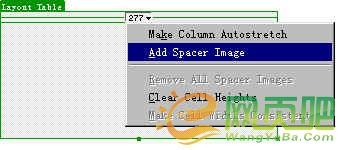
创建并保存spacer image,这个spaceer image 就是一个1像素× 1像素的透明图像)。然后在表格的属性中设置为:H(高度)为1 pixel(1像素)，W(宽度)为想要的宽度(可输入像素值或者百分比)，cellpad、 cellspace、border中都输入0，然后在Bg Color(背景颜色)中选择想要的颜色，带颜色的水平细线就这样被插入了。
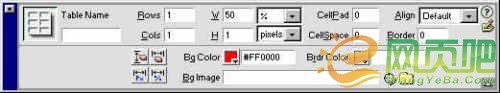
如果把H值增大，那么这条线会变粗。如果要插入带颜色的垂直细线，则把H设置为想要的高度值，W设置为0，其他设置同上，即可插入垂直细线。在网页编辑窗口中,这的颜色仍是灰色的,但按F12预览，在浏览器中就可以看到所插入的细线的颜色已经变成了你想要的颜色
微信公众号搜索 “ 脚本之家 ” ，选择关注
程序猿的那些事、送书等活动等着你
相关文章
- 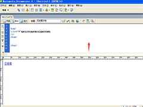
Dreamweaver文字或图片怎么添加空连接? - Dreamweaver文字或图片怎么添加空连接？Dreamweaver制作网页的时候，需要给网页中的图片或者文字添加空连接，该怎么实现呢？下面我们就来看看详细的教程，需要的朋友可以参
- 2019-10-09
- 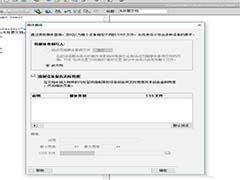
Dreamweaver媒体查询命令怎么使用? - Dreamweaver媒体查询命令怎么使用？Dreamweaver制作页面会用到很多命令，我们今天就来介绍关于媒体查询命令的使用方法，需要的朋友可以参考下
- 2019-09-03
- 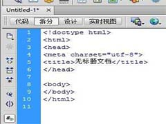
Dreamweaver怎么修改文档说明类型? - Dreamweaver怎么修改文档说明类型？Dreamweaver中想要更改文档说明，该怎么更改呢？下面我们就来看看详细的教程，需要的朋友可以参考下
- 2019-09-03
- 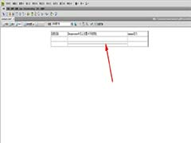
Dreamweaver怎么插入水平线并设置颜色? - Dreamweaver怎么插入水平线并设置颜色？Dreamweaver制作网页的时候，想要插入一个水平线，该怎么插入水平线并设置红色呢？下面我们就来看看详细的教程，需要的朋友可以参考
- 2019-05-06
dreamweaver怎么使用正则表达式?- dreamweaver怎么使用正则表达式？dreamweaver页面中有需要替换的内容，该怎么替换呢？我们可以使用正则表达式来替换，下面我们就来看看详细的教程，需要的朋友可以参考下
- 2019-04-30
- 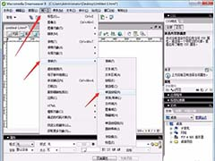
Dreamweaver网页怎么插入单选按钮? - Dreamweaver网页怎么插入单选按钮？Dreamweaver设计网页的时候，需要使用单选按钮，该怎么插入单选按钮呢？下面我们就来看看详细的教程，需要的朋友可以参考下
- 2019-04-26
- 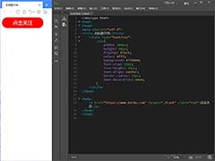
Dreamweaver CC2019怎么制作关注按钮? - Dreamweaver CC2019怎么制作关注按钮？dw2019中想要制作一个按钮并给按钮添加链接，实现关注的效果，该怎么操作嗯？下面我们就来看看详细的教程，需要的朋友可以参考下
- 2019-04-25
- 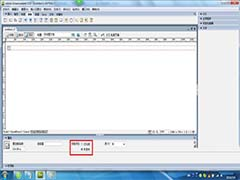
Dreamweaver CS3复选框怎么用? dw复选框属性介绍 - Dreamweaver CS3复选框怎么用？Dreamweaver CS3制作网页的时候，经常使用复选框，复选框的各种属性有什么作用？下面我们就来看看dw复选框属性介绍，需要的朋友可以参考下
- 2019-04-24
- 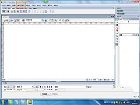
Dreamweaver CS3网页怎么创建多个层? - Dreamweaver CS3网页怎么创建多个层？Dreamweaver CS3制作页面的时候，经常使用层，可以容纳网页元素的容器，下面我们就来看看一个简单的实例教程，需要的朋友可以参考下
- 2019-04-24
- 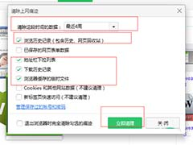
Dreamweaver修改后的网页运行页面不变该怎么办? - Dreamweaver修改后的网页运行页面不变该怎么办？Dreamweaver对某些网页进行了修改，保存后再运行发现没有任何改变，这个怎么回事？该怎么解决呢？请看下文详细介绍，需要的
- 2019-04-23
import cc as bbprint("wenlike to do that")
段落案例 第一段，第一行
第二行 第二段
第三段
最新评论
关于我们 - 广告合作 - 联系我们 - 免责声明 - 网站地图 - 投诉建议 - 在线投稿
©CopyRight 2006-2020 JB51.Net Inc All Rights Reserved. 脚本之家 版权所有